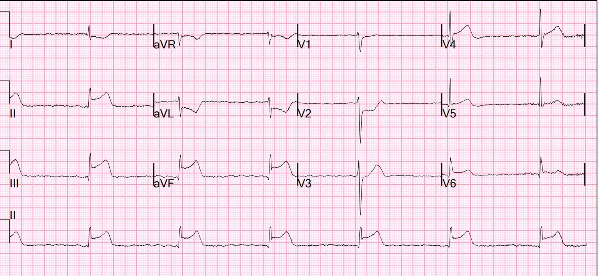
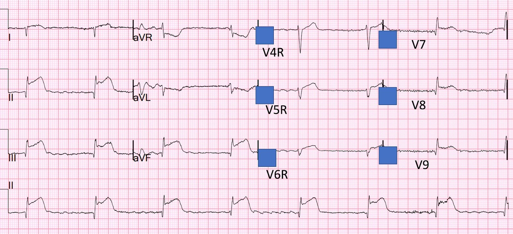
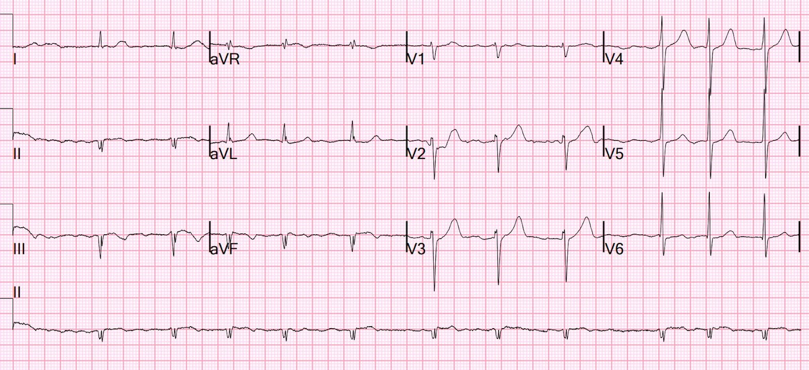
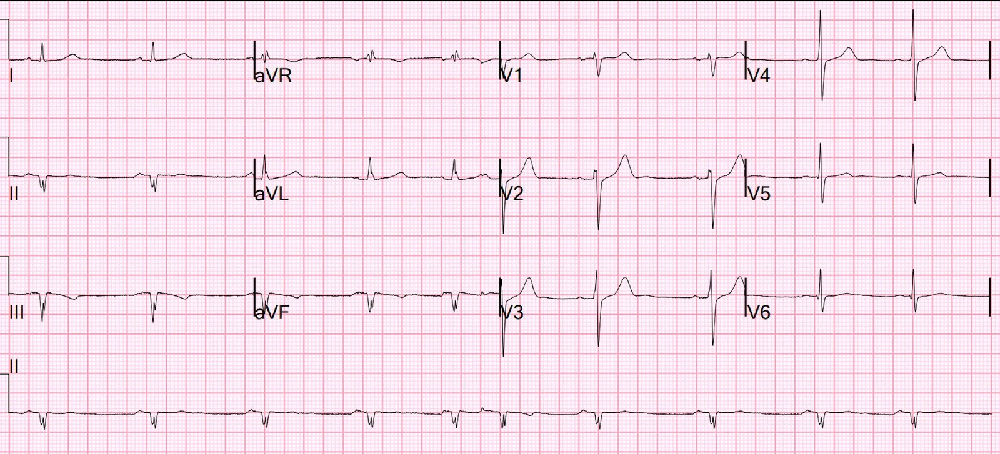
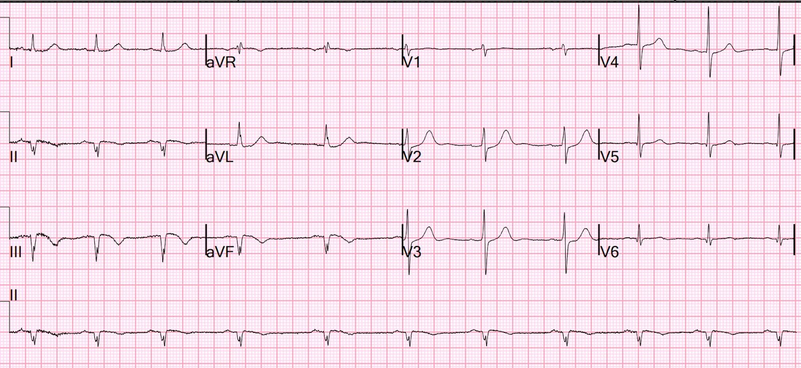
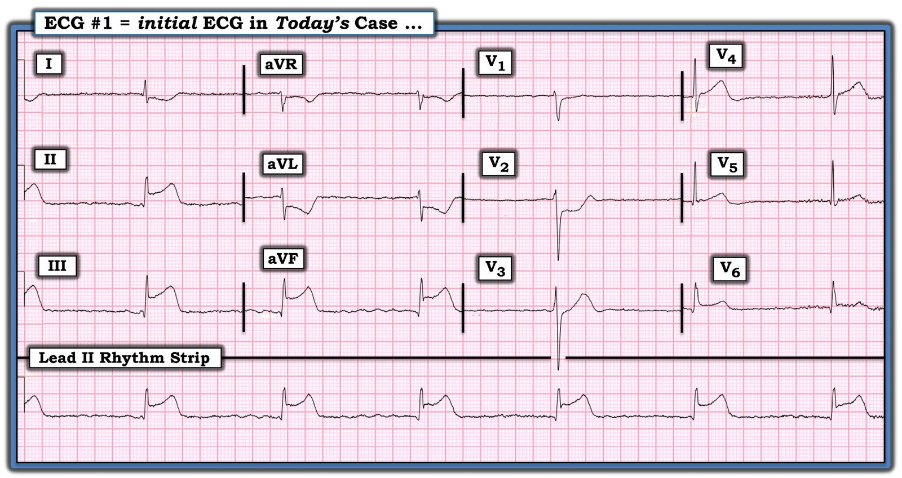
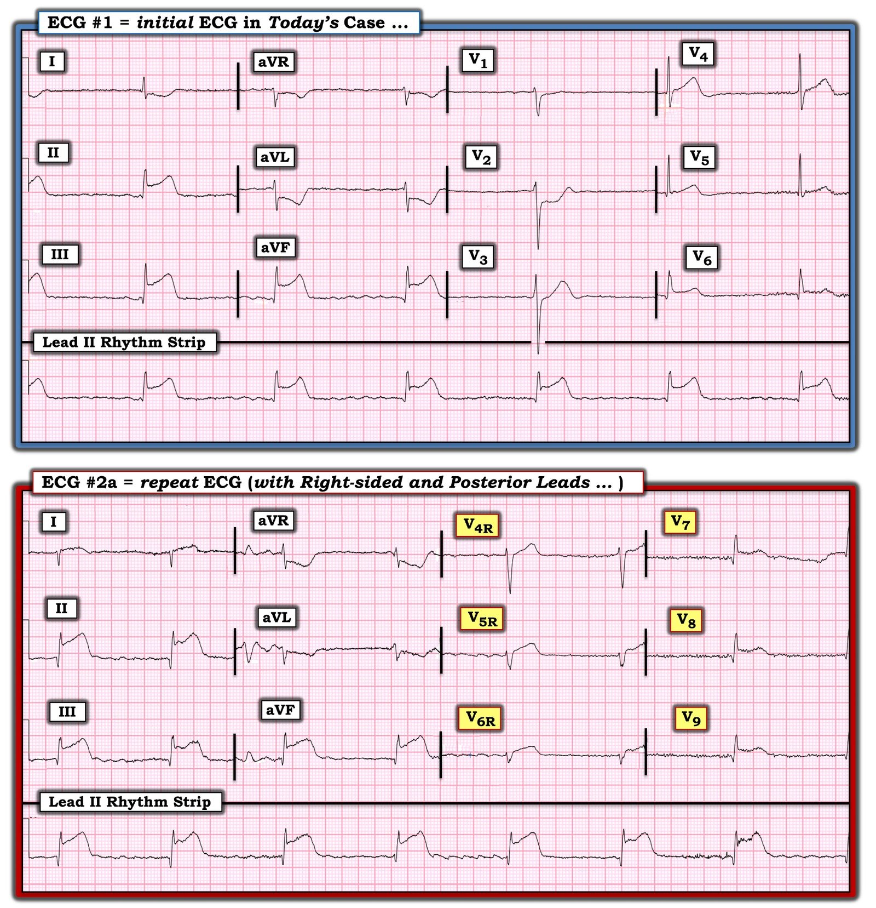
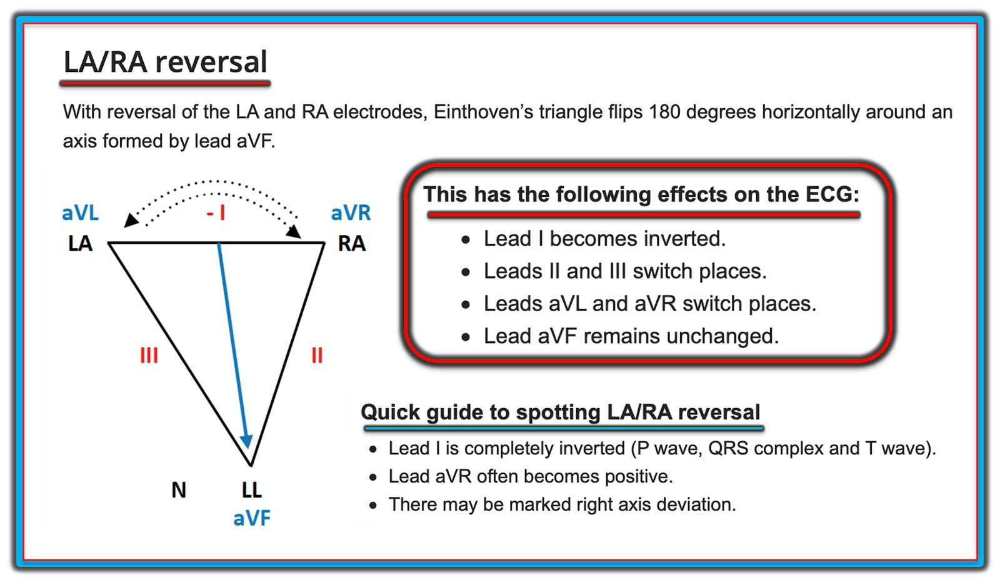
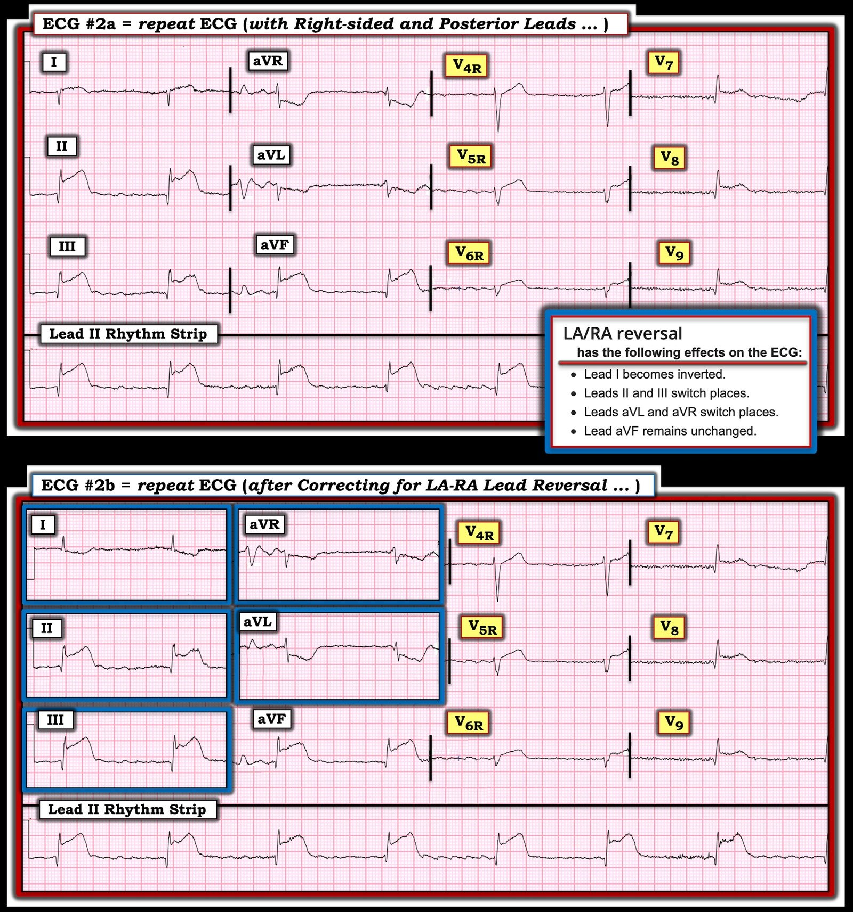
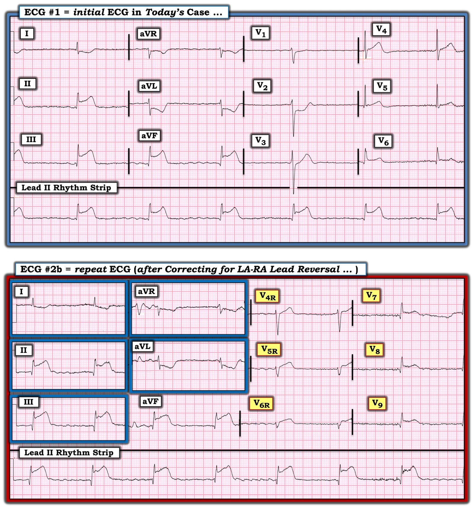

30/05/2023 — Đau ngực và sốc: Có OMI thất phải trên điện tâm đồ này không? Và có nên tạo nhịp qua da cho bệnh nhân?
Bản dịch tiếng Việt của bài "Chest pain and shock: Is there a right ventricular OMI on this ECG? And should he undergo trancutaneous pacing?" – Dr. Smith’s ECG Blog. Giữ nguyên toàn bộ 14 hình ảnh của bản gốc.
Một người đàn ông ngoài 50 tuổi nhập viện trong tình trạng sốc kèm đau ngực dữ dội. Điện tâm đồ trước viện của ông đã đủ để chẩn đoán OMI thành dưới-sau.
Bệnh nhân ở trong tình trạng sốc trên lâm sàng với lactat 8. Huyết áp tâm thu là 108 (nếu có thể tin vào huyết áp đo bằng băng quấn) nhưng có vẻ chỉ duy trì được huyết áp nhờ sức cản mạch hệ thống rất cao.
Ông trông xám xịt, da lạnh.
Đây là điện tâm đồ của ông tại khoa cấp cứu (ED):


Có nhịp chậm với nhịp thoát bộ nối.
Hoạt động nhĩ là gì? Đây có phải là ngưng xoang kèm nhịp thoát bộ nối? Hay là rung nhĩ kèm blốc AV hoàn toàn và nhịp thoát bộ nối?
Có một OMI STEMI dương tính (STEMI(+) OMI) thành dưới-sau rõ ràng.
Nhưng cũng có một ít ST chênh lên (STE) ở các chuyển đạo bên.
Vậy là OMI thành dưới, thành sau và thành bên.
Liệu có cả OMI thất phải (RV OMI, hay RV MI) nữa không?
Làm sao để biết?
Chúng tôi đã nghiên cứu vấn đề này (xem Bischof, Worral, Smith bên dưới).
Trên điện tâm đồ 12 chuyển đạo ban đầu, bất kỳ mức STE nào ở V1 trong bối cảnh OMI thành dưới đều rất đặc hiệu và có độ nhạy khoảng 70% đối với OMI thất phải. Đó là vì V1 nằm ngay phía trên thất phải (RV).
TUY NHIÊN, điều này chỉ áp dụng khi KHÔNG có ST chênh xuống ở V2. ST chênh xuống (STD) ở V2 “kéo” đoạn ST ở V1 xuống, do đó xóa đi mọi dấu hiệu của nhồi máu thất phải (RV MI).
Thực tế, nếu có STD đáng kể ở V2 nhưng KHÔNG có ở V1, thì đó là dấu hiệu gợi ý có thể có RV MI, vì với một OMI thành sau như vậy, bạn sẽ dự kiến thấy STD đi kèm ở V1.
Điều này cũng đúng với V4R: độ nhạy của nó giảm mạnh khi có OMI thành sau. Xem tài liệu tham khảo của Kosuge bên dưới.
Do đó, việc không có STE ở V1 hoàn toàn không loại trừ RV MI, và ngay cả việc không có STE ở V4R cũng không loại trừ được.
Phải làm gì?
Chúng tôi đã ghi một điện tâm đồ trong đó V1-V3 được đặt ở vị trí V4R-V6R, còn V4-6 được đặt ở vị trí V7-9 để xác nhận (về mặt học thuật) OMI thành sau. Tôi nói về mặt học thuật vì STD ở V2 đã đủ để chẩn đoán — các chuyển đạo phía sau là KHÔNG cần thiết.
Đây là điện tâm đồ đó:


Có STE và sóng T tối cấp ở khắp các chuyển đạo ngực bên phải, và STE ở các chuyển đạo phía sau.
Điều này xác nhận nhồi máu thành dưới, thành sau, thành bên và nhồi máu thất phải (RV MI)
RV MI thường dẫn đến sốc và tụt huyết áp (tâm thu). Vì áp lực thất phải bình thường thấp (khác với thất trái), thất phải được tưới máu bởi huyết áp tâm thu bên cạnh huyết áp tâm trương, nên tụt huyết áp rất có hại cho thất phải. May mắn cho bệnh nhân này, dù cung lượng tim của ông rất kém, sức cản mạch hệ thống (SVR) vẫn giữ huyết áp đủ cao cho thất phải. Nếu không được như vậy, sẽ có chỉ định norepinephrine để duy trì huyết áp tâm thu
Về nhịp thoát:
Đây là nhịp có QRS hẹp, do đó nó xuất phát từ bó His hoặc phía trên (không phải dưới bó His). Khi QRS hẹp (trên bó His), nhịp này nhiều khả năng đáp ứng với atropin.
Ca bệnh tiếp diễn
Siêu âm tại giường cho thấy phân suất tống máu thất trái (LV EF) giảm và dĩ nhiên là nhịp chậm.
1 mg Atropin đã được tiêm và tần số tim tăng thoáng qua lên 60.
RVMI giải thích một phần tình trạng sốc. Có chỉ định truyền dịch tĩnh mạch để tăng tiền tải, nhưng không quá nhiều, vì thất phải có thể bị quá tải dịch, làm vách liên thất cong lồi về phía thất trái, rồi làm giảm thể tích nhát bóp thất trái và cung lượng tim, dẫn đến tụt huyết áp nặng hơn, tưới máu thất phải kém hơn, chức năng thất phải xấu hơn và suy thất phải nhiều hơn.
Tạo nhịp qua da đã được cân nhắc trong lúc bệnh nhân chờ êkíp thông tim. Và cả đặt nội khí quản để vừa bảo vệ đường thở vừa tạo thuận lợi cho việc tạo nhịp ngoài. Bác sĩ can thiệp lo ngại rằng nếu tiến hành tạo nhịp rồi bị gián đoạn vì lý do nào đó, thì có thể dẫn tới vô tâm thu.
Quả thật đây là một mối lo có thật, rằng tạo nhịp có thể làm mất nhịp thoát. Tôi đã hỏi bác sĩ điện sinh lý của chúng tôi về điều này và anh ấy nói rằng đó chủ yếu là mối lo khi nhịp thoát nằm DƯỚI bó His. Dù sao, anh ấy nói mình sẽ cứ tiếp tục cho atropin chừng nào thuốc còn hiệu quả. Tuy nhiên, nâng mạch lên 60 khó có thể gọi là “hiệu quả” đối với một bệnh nhân cần cung lượng tim cao hơn nhiều.
May mắn là bệnh nhân đã đến được phòng thông tim (cath lab) còn sống mà không cần tạo nhịp hay đặt nội khí quản.
Chụp mạch vành:
(Các) tổn thương thủ phạm: Tắc do huyết khối ở RCA đoạn gần — đã đặt stent.
Bình luận: Đoạn gần nghĩa là ở vị trí gần so với nhánh bờ thất phải (Right Ventricular Marginal Branch) cấp máu cho thất phải. Không phải mọi trường hợp tắc đoạn gần đều gây OMI thất phải, vì nhiều người có tuần hoàn bàng hệ từ LAD sang thất phải.
Troponin:
Ban đầu: 29 ng/L (mức này nằm trong giới hạn bình thường, vì giới hạn trên tham chiếu (URL) </= 35 ng/L)
Sau PCI: > 36.000 ng/L
Điện tâm đồ sau PCI:


Sóng Q, tái tưới máu và rung nhĩ
Cuối ngày hôm đó:


Nhịp xoang kèm PAC, và sóng Q kèm tái tưới máu
Và ngày hôm sau:


Không thay đổi
Những điểm cần học:
1. RV MI do tắc RCA đoạn gần xảy ra ở một tỷ lệ đáng kể các trường hợp OMI thành dưới do RCA.
2. Không phải mọi trường hợp tắc RCA đoạn gần đều gây RV MI (nghĩa là, không phải lúc nào cũng gây STE ở các chuyển đạo bên phải kèm chức năng thất phải kém, vì có tuần hoàn bàng hệ từ LAD.)
3. ST chênh lên ở V1 có độ nhạy trung bình đối với RV MI, nhưng hoàn toàn không nhạy khi có STD ở V2
4. STD ở V2 mà không có STD ở V1 là một dấu hiệu của RV MI
5. RV MI có thể gây tụt huyết áp.
6. Thất phải được cấp máu cả trong thì tâm thu lẫn thì tâm trương.
7. RCA cấp máu cho nút xoang (nút SA) và OMI do RCA có thể gây ngưng xoang.
8. Atropin thường có hiệu quả với nhịp bộ nối có QRS hẹp
9. Bạn có thể thử ghi các chuyển đạo ngực bên phải để giúp chẩn đoán RV MI
10. Tạo nhịp qua da không nên gây ra tình trạng mất nhạy sau tạo nhịp (subsequent pacing insensitivity), trừ khi nhịp thoát nằm dưới His (infra-Hisian, tức dưới bó His). Một nhịp thoát như vậy sẽ có QRS rộng hơn.
Tài liệu được trích dẫn
Trong nhồi máu cơ tim thành dưới, cả ST chênh lên ở chuyển đạo V1 lẫn ST chênh xuống ở chuyển đạo I đều không phải là dấu hiệu đáng tin cậy để chẩn đoán nhồi máu thất phải
, ,
Tóm tắt
Mục tiêu
Khi có nhồi máu cơ tim (MI) thành dưới, ST chênh xuống (STD) ở chuyển đạo I đã được cho là chính xác để chẩn đoán nhồi máu cơ tim thất phải (RV MI). Chúng tôi tìm cách đánh giá nhận định này, và cả việc ST chênh lên (STE) ở chuyển đạo V1 có hữu ích hay không, khi có hoặc không có STD ở V2.
Phương pháp
Nghiên cứu hồi cứu các trường hợp STEMI thành dưới liên tiếp, so sánh điện tâm đồ của các bệnh nhân có RVMI với những người không có RVMI, được xác định bằng tắc động mạch vành trên chụp mạch ở vị trí gần so với nhánh bờ thất phải. STE và STD được đo tại điểm J, so với điểm nối PQ. Tiêu chí đánh giá chính là độ nhạy/độ đặc hiệu của 1) STD ở chuyển đạo I ≥ 0,5 mm và 2) STE ở chuyển đạo V1 ≥ 0,5 mm, phân tầng theo có hay không có nhồi máu thành sau (đáy dưới – inferobasal), được xác định bằng STD ≥0,5 mm ở chuyển đạo V2, trong việc phân biệt RVMI với không RVMI.
Kết quả
Trong số 149 bệnh nhân STEMI thành dưới, 43 (29%) có RVMI và 106 (71%) không có. Không có khác biệt về việc có hay không có STD ít nhất 0,5 mm ở chuyển đạo I giữa nhóm có RVMI (37/43, 86%) và nhóm không có RVMI (85/106, 80%, p = 0,56). Ở nhóm có so với nhóm không có RVMI, (15/43, 35%) có STE ở V1, so với (17/106, 16%) (p = 0,015). Độ đặc hiệu của STE ở V1 đối với RVMI là 84%; độ nhạy là 35%. Độ nhạy cao hơn khi không có (69%) so với khi có (35%) STD ở V2.
Kết luận
Trong STEMI thành dưới, sự hiện diện của bất kỳ mức ST chênh xuống nào ở chuyển đạo I đều không giúp chẩn đoán RVMI. ST chênh lên ≥0,5 mm ở chuyển đạo V1 đặc hiệu cho RVMI, và có độ nhạy trung bình chỉ khi không đồng thời có STD ≥ 0,5 mm ở V2. Mặc dù STE ở V1 khá đặc hiệu, nhìn chung các đặc tính chẩn đoán của điện tâm đồ chuẩn 12 chuyển đạo không đủ để chẩn đoán xác định, hoặc loại trừ, RVMI theo định nghĩa trên chụp mạch.
____________________________
Kosuge M, Ishikawa T, Morita S, Ebina T, Hibi K, Maejima N, Umemura S, Kimura K. Posterior wall involvement attenuates predictive value of ST-segment elevation in lead V4R for right ventricular involvement in inferior acute myocardial infarction (Tổn thương thành sau làm giảm giá trị tiên đoán của ST chênh lên ở chuyển đạo ngực phải đối với tổn thương thất phải trong nhồi máu cơ tim cấp thành dưới). J Cardiol [Internet]. 2009;54:386–393. Truy cập tại: http://www.ncbi.nlm.nih.gov/entrez/query.fcgi?cmd=Retrieve&db=PubMed&dopt=Citation&list_uids=19944313
BỐI CẢNH: ST chênh lên >/=1,0 mm ở chuyển đạo ngực phải V4R (ST↑V4R) đã được chứng minh là một dấu hiệu đáng tin cậy của tổn thương thất phải (RVI) trong nhồi máu cơ tim cấp thành dưới (IMI). Tuy nhiên, ảnh hưởng của tổn thương thành sau thất trái (PWI) lên mối liên quan giữa ST↑V4R và RVI vẫn chưa được biết. PHƯƠNG PHÁP: Chúng tôi nghiên cứu 267 bệnh nhân IMI đã được tái thông, do tắc động mạch vành phải (RCA), trong vòng 6 giờ sau khởi phát triệu chứng. Điện tâm đồ 12 chuyển đạo, chuyển đạo V4R và các chuyển đạo V7-9 được ghi khi nhập viện. RVI được định nghĩa là tắc ở vị trí gần so với nhánh thất phải lớn đầu tiên của RCA. Vùng tưới máu của RCA được đánh giá bằng điểm phân bố trên chụp mạch, và PWI được định nghĩa là điểm >/=0,7. Bệnh nhân được phân tầng theo có hay không có PWI và RVI. KẾT QUẢ: RVI liên quan với creatine kinase đỉnh cao hơn và tỷ lệ tái tưới máu cơ tim bị suy giảm cao hơn — được định nghĩa là độ ngấm thuốc cơ tim (myocardial blush grade) 0 hoặc 1 sau tái thông — dù có hay không có PWI, đặc biệt khi có PWI. RVI liên quan với tỷ lệ ST↑V4R cao hơn khi không có PWI, nhưng không phải khi có PWI. ST↑V4R nhận diện RVI với độ nhạy 34% và 96% (p<0,001), và độ đặc hiệu 83% và 82% (không có ý nghĩa thống kê, NS), lần lượt khi có và khi không có PWI. KẾT LUẬN: Ở bệnh nhân IMI đã được tái thông, RVI liên quan với ổ nhồi máu lớn hơn và tái tưới máu cơ tim bị suy giảm, dù có hay không có PWI, đặc biệt khi có PWI. Tuy nhiên, sự hiện diện của PWI làm giảm giá trị tiên đoán của ST↑V4R đối với RVI.

==================================
BÌNH LUẬN CỦA TÔI, bởi KEN GRAUER, MD (30/5/2023):
==================================
Ca bệnh minh họa cho ảnh hưởng của tắc cấp đoạn gần RCA (Right Coronary Artery – động mạch vành phải) kèm tổn thương thất phải (RV). Tôi tập trung bình luận vào một số khía cạnh bổ sung của việc đọc điện tâm đồ trong ca này.
- Trong Hình 1 — tôi đã đưa lại điện tâm đồ ban đầu của ca hôm nay. Như phần bàn luận của Dr. Smith ở trên — điện tâm đồ #1 cho thấy STEMI dưới-sau-bên cấp kèm nhịp thoát bộ nối.
Làm thế nào để xác định động mạch “thủ phạm”?
Về mặt thống kê, khoảng 80-90% bệnh nhân có tuần hoàn “ưu thế phải”. Ở những bệnh nhân này, sau khi cấp máu cho RV (thất phải) — RCA tiếp tục đi thành PDA (Posterior Descending Artery – động mạch liên thất sau) dọc theo mặt dưới của tim để cấp máu cho thành sau và thành dưới của LV (thất trái) — và đôi khi cho cả thành bên qua các nhánh sau-bên tách ra từ PDA.
- Ngược lại, khoảng 15% bệnh nhân có tuần hoàn ưu thế trái, trong đó RCA kém nổi trội hơn. Để bù lại, động mạch LCx (Left Circumflex – động mạch mũ trái) là một mạch tương đối lớn hơn, và nó (thay vì RCA) cung cấp phần lớn (hoặc toàn bộ) lượng máu cho PDA. Kết quả là, không chỉ thành bên — mà cả thành dưới và thành sau của LV đều chủ yếu được cấp máu bởi động mạch LCx ở những bệnh nhân có tuần hoàn ưu thế trái.
- Do đó — Tắc cấp (OMI) ở một trong hai động mạch RCA hoặc LCx đều có thể gây MI dưới-sau-bên cấp (mặc dù về mặt thống kê — RCA thường là động mạch “thủ phạm” hơn rất nhiều).
ĐIỂM THEN CHỐT (PEARL) #1: Trong số các đặc điểm điện tâm đồ củng cố thêm khả năng RCA là động mạch “thủ phạm” có: i) ST chênh lên ở chuyển đạo III>II; — ii) ST chênh xuống soi gương rõ rệt ở chuyển đạo aVL; iii) ST chênh lên ở thành bên tương đối ít hơn (hoặc không có), với mức ST chênh lên ở chuyển đạo III>V6; và, iv) Bằng chứng tổn thương thất phải cấp. Tất cả các đặc điểm này đều có mặt trên điện tâm đồ #1 của ca hôm nay.
- Điểm MẤU CHỐT: LCx không cấp máu cho thất phải. Do đó, nếu có bằng chứng điện tâm đồ gợi ý tổn thương thất phải cấp đi kèm STEMI thành dưới — điều này gần như chẩn đoán xác định RCA đoạn gần là động mạch “thủ phạm” (vì thất phải được cấp máu bởi phần đầu này của RCA).
- Mặc dù ST chênh lên ở các chuyển đạo bên phải (đặc biệt ở chuyển đạo V4R) rõ ràng là chỉ điểm tốt nhất của RV MI cấp — chuyển đạo V1 là một chuyển đạo bên phải. Vì vậy — chuyển đạo V1 trên điện tâm đồ chuẩn đôi khi có thể giúp nhận định khả năng có RV MI.
Dr. Smith đã đưa ra dữ liệu cho thấy khi nào ST chênh lên ở chuyển đạo V1 chỉ điểm tổn thương thất phải cấp. Dù việc ghi các chuyển đạo bên phải trong ca hôm nay là hoàn toàn phù hợp — chúng ta vẫn có thể gần như chắc chắn rằng động mạch “thủ phạm” trong ca hôm nay là RCA đoạn gần (kèm tổn thương thất phải), dựa trên điện tâm đồ #1 đối chiếu với bối cảnh lâm sàng.
- ST chênh xuống “dạng bậc thềm” (shelf-like) rõ rệt ở chuyển đạo V2 tự nó đã đủ để chẩn đoán MI thành sau cấp (đúng như ý của Dr. Smith rằng không cần đến các chuyển đạo phía sau để chẩn đoán điều này!).
- Với MI thành sau đơn độc — thường có ít nhất một chút ST chênh xuống ở các chuyển đạo lân cận V1 và V3. Thế nhưng ở đây — điểm J ở cả hai chuyển đạo này chỉ chênh xuống không quá mức tối thiểu.
- Với hiểu biết từ các đặc điểm điện tâm đồ ở trên chỉ ra RCA là động mạch “thủ phạm” (tức là, ST chênh lên ở III>II — ST chênh xuống soi gương rõ rệt ở aVL — ST chênh lên ở III>V6) — và — biểu hiện sốc (giảm thể tích tương đối kèm tụt huyết áp vốn thường gặp trong RV MI) của bệnh nhân — và — việc không có ST chênh xuống ở chuyển đạo V1 — kết luận hợp lý nhất là giả định có tổn thương thất phải cấp đi kèm tắc RCA đoạn gần (trong đó ST chênh lên do RV MI làm giảm bớt mức ST chênh xuống lẽ ra đã xuất hiện ở chuyển đạo V1).


Chuyển đạo V2 như một chuyển đạo “chuyển tiếp”:
Tôi thấy thú vị là ST chênh xuống trên điện tâm đồ ban đầu chủ yếu thấy ở chuyển đạo V2. Tôi diễn giải điều này là chuyển đạo V2 đóng vai trò như một chuyển đạo “chuyển tiếp”:
- Như đã nói ở trên — sóng ST-T tương đối dẹt ở chuyển đạo V1 đi kèm tắc RCA cấp gợi ý nhiều khả năng có tổn thương thất phải.
- Thay vì ST chênh xuống tương đương ở các chuyển đạo V3,V4 như đã thấy ở chuyển đạo V2 — chỉ có điểm J chênh xuống không quá mức tối thiểu ở chuyển đạo V3 — và, ST chênh lên bắt đầu xuất hiện ở chuyển đạo V4 và tăng rõ khi chúng ta di chuyển sang bên về phía chuyển đạo V6. Vì vậy, không có gì ngạc nhiên khi thấy ST chênh lên tiếp tục tăng dần khi đánh giá thêm các chuyển đạo ở phía bên và phía sau hơn (tức là, các chuyển đạo V7,V8,V9 — trên điện tâm đồ #2a — như được trình bày trong Hình 2).
THỬ THÁCH:
Ngoài việc xác nhận MI thành sau và MI thất phải cấp — còn một dấu hiệu điện tâm đồ quan trọng mới nữa trên điện tâm đồ #2a.
- Dấu hiệu điện tâm đồ mới này LÀ GÌ trên điện tâm đồ ghi lại ở Hình 2?
- GỢI Ý: Nếu động mạch “thủ phạm” là RCA — TẠI SAO trên điện tâm đồ #2a giờ đây ST chênh lên ở chuyển đạo II lại nhiều hơn ở chuyển đạo III?


TRẢ LỜI cho câu hỏi THỬ THÁCH:
Lý do bây giờ ST chênh lên ở chuyển đạo II nhiều hơn ở chuyển đạo III trên điện tâm đồ #2a — là vì có đảo điện cực LA-RA trên bản ghi lại này!
- Tài liệu tham khảo “Quick GO-TO” (tra cứu nhanh) trực tuyến mà tôi yêu thích nhất về các kiểu đặt sai vị trí điện cực thường gặp nhất là của LITFL ( = Life-In-The-Fast-Lane). Tôi đã dùng trang web tuyệt vời mà họ đăng trên website của mình về chủ đề này trong nhiều năm. Trang này rất DỄ tìm — Chỉ cần gõ “LITFL Lead Reversal” vào thanh Tìm kiếm — và đường link hiện ra ngay lập tức.
- Trang web này của LITFL mô tả 7 kiểu đảo điện cực thường gặp nhất. Còn có những khả năng khác (tức là, trường hợp có thể đặt sai vị trí nhiều điện cực) — nhưng những trường hợp này ít gặp hơn và khó dự đoán hơn.
- Vượt xa mọi kiểu khác (!) — kiểu đảo điện cực thường gặp nhất là nhầm lẫn giữa hai điện cực LA (Left Arm – tay trái) và RA (Right Arm – tay phải). Đây chính là sự nhầm lẫn đã xảy ra ở điện tâm đồ #2a. Để rõ ràng — tôi đã trình bày lại hình minh họa của LITFL về đảo điện cực LA-RA trong Hình 3.
- ĐIỂM THEN CHỐT #2: Như đã ghi trong phần “Hướng dẫn nhanh” ở cuối Hình 3 — đảo điện cực LA-RA rất DỄ nhận ra khi bạn thấy “âm toàn bộ” (global negativity) ở chuyển đạo I (tức là, khi sóng P, phức bộ QRS và sóng T đều âm ở chuyển đạo I ). Điều đáng rút ra là những dấu hiệu “tố giác” này có thể vắng mặt khi không có sóng P (vì nhịp là nhịp bộ nối) — khi có ST chênh xuống soi gương rõ rệt ở chuyển đạo I — và khi QRS ở chuyển đạo aVR có biên độ nhỏ và gần như hai pha — đúng như đã xảy ra trong ca hôm nay!


Lẽ ra điện tâm đồ ghi lại phải trông như thế nào?
Để rõ ràng — tôi đã lấy điện tâm đồ ghi lại trong ca hôm nay ( = điện tâm đồ #2a) — rồi đảo ngược chuyển đạo I — hoán đổi chuyển đạo II và III — và hoán đổi chuyển đạo aVL và aVR ( = điện tâm đồ #2b, là bản ghi phía dưới trong Hình 4).
- Chẳng phải điện tâm đồ #2b giờ đây trông hoàn toàn phù hợp với những gì chúng ta có thể chờ đợi ở các chuyển đạo chi trong ca hôm nay hay sao?
- Bây giờ hãy NHÌN vào Hình 5 — hình so sánh bản ghi ghi lại “đã chỉnh” ( = điện tâm đồ #2b) — với điện tâm đồ ban đầu trong ca hôm nay. Hình thái QRST gần như giống hệt nhau ở các chuyển đạo chi giữa 2 bản ghi này xác nhận rằng đã có đảo điện cực LA-RA ở điện tâm đồ #2a. Như đã bàn ở trên — việc thay các chuyển đạo trước ngực của điện tâm đồ #2b bằng các chuyển đạo bên phải và phía sau xác nhận nhồi máu thất phải và nhồi máu thành sau.




Các ví dụ KHÁC về đảo điện cực trên Blog của Dr. Smith:
Các lỗi kỹ thuật với nhiều kiểu đảo vị trí điện cực khác nhau vẫn là một “sự cố” thường gặp đến bất ngờ trong thực hành hằng ngày. Vì vậy — chúng tôi sẽ tiếp tục định kỳ đăng các ví dụ lâm sàng về đặt sai vị trí điện cực. Để ôn lại — TRUY CẬP:
- Bài đăng ngày 4 tháng Sáu năm 2018 (đảo điện cực LA-LL).
- Bài đăng ngày 29 tháng Bảy năm 2018 (đảo điện cực LA-RA).
- Bài đăng ngày 4 tháng Mười Một năm 2018 (đặt sai vị trí chuyển đạo V1,V2).
- Bài đăng ngày 11 tháng Hai năm 2020 (đảo điện cực LA-RA).
- Bài đăng ngày 18 tháng Ba năm 2020 (đảo điện cực LA-RA).
- Bài đăng ngày 28 tháng Tám năm 2020 (đảo điện cực LA-LL).
- Bài đăng ngày 19 tháng Mười Một năm 2020 (đảo điện cực LA-LL).
- Bài đăng ngày 27 tháng Mười Một năm 2021 (đảo điện cực LA-RA).
- Bài đăng ngày 17 tháng Tư năm 2022 (đặt sai vị trí chuyển đạo V1,V2).
- Bài đăng ngày 24 tháng Năm năm 2022 (đảo điện cực LA-LL).
- Bài đăng ngày 26 tháng Năm năm 2022 (đảo điện cực LA-LL).
- Bài đăng ngày 17 tháng Tám năm 2022 (đảo điện cực LA-RA).